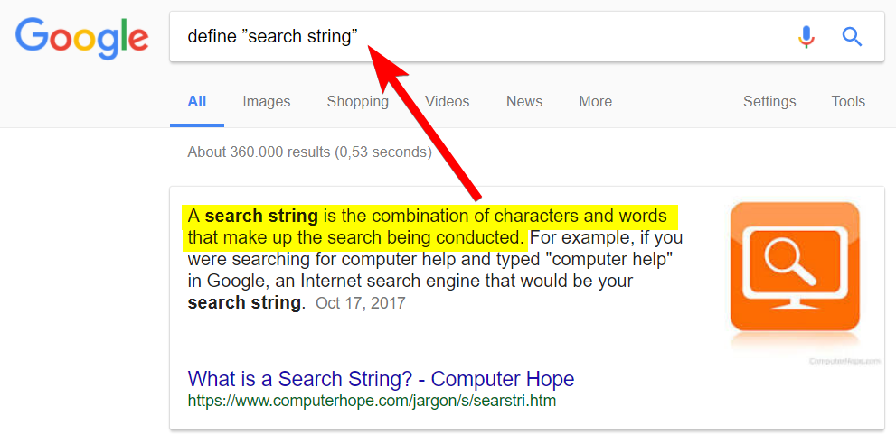
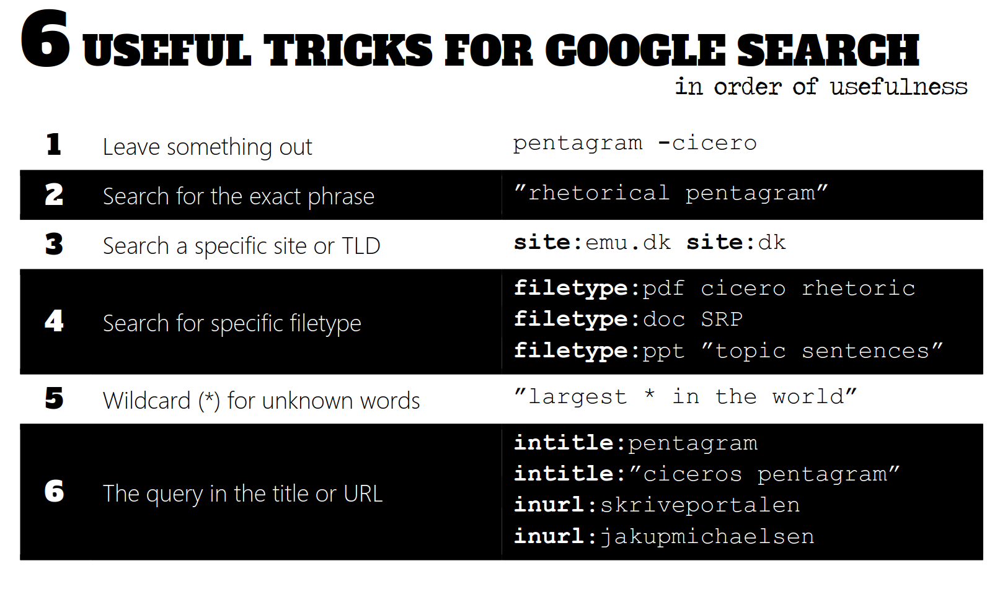
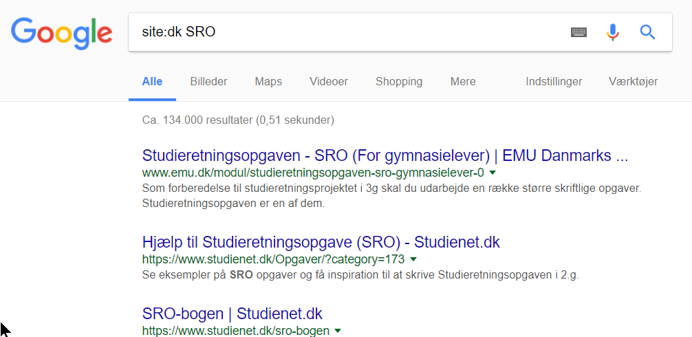

Search strings

A good search string will give you what you need on the first page of the SERP (Search Engine Results Page)

Individually, spend 5 minutes playing around with creating search strings that use these tricks!
Skim the SERP to see the effects of your search string manipulation.
Googling exercises
In pairs, come up with good search strings for the following tasks. Test and re-test them and then share the search strings on padlet.com/jakupmichaelsen/TodaysClass_archived

- Search for the phrase "cicero's pentagram" and leave out the TLD of Denmark
- Use wildcards to find variations of the phrase ”may the force be with you”
- See if the Danish and English Wikipedia have an article about the rhetorical pentagram
- Find Danish sites about clickbait
- Find Word documents from a US university about fake news
- Find URLs with one or more of your own username(s)
- Search for sites about "alternative facts", excluding the Danish Wikipedia
Searching through time
To search within a specific time frame, use the "Tools" or "Værktøjer" menu:

Now, use that tool with some search strings:
- Find everything posted on gymnasiet.dk over the past month (hint: use trick 3)
- Find everything Danmarks Radio has posted during the past hour
In the week after 9/11:
- What did Politiken.dk write about?
- What did other media, foreign and domestic, write in the same periode?
THE END
Search strings